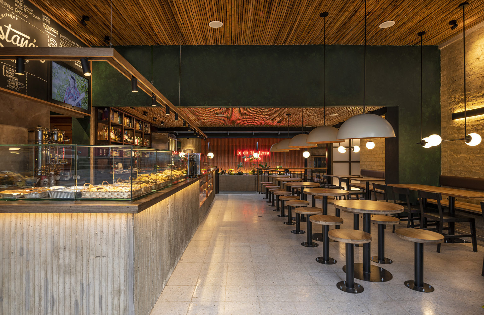
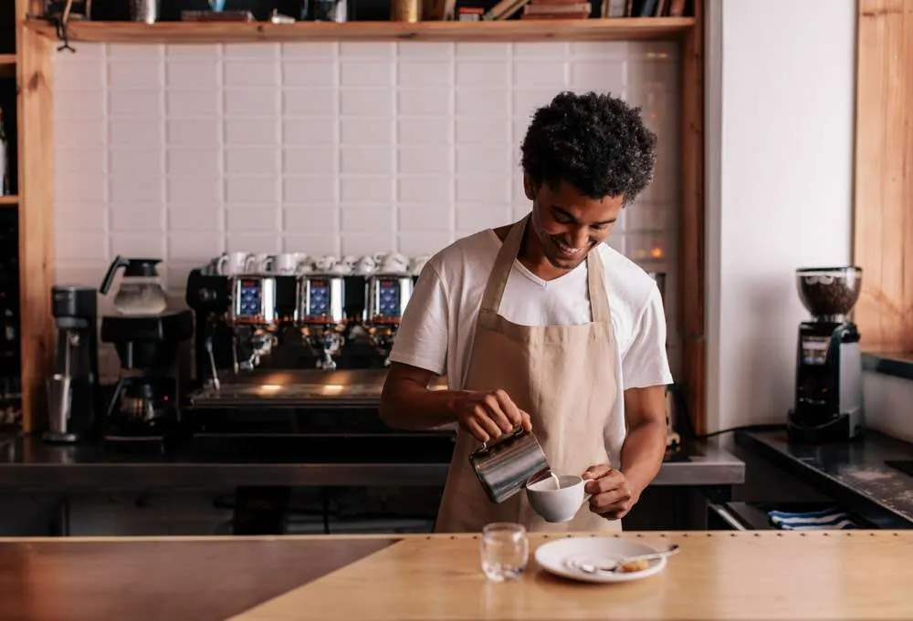
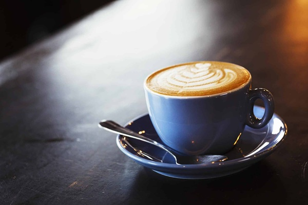

Welcome to Mug and Mingle! We're a cosy café that prides itself on bringing the finest artisan coffee
to our community.
Our mission is simple: to create exceptional coffee experiences that bring people together.
Our Story
Our Story
It all started with a passion for great coffee. After years of searching for the perfect cup,
we decided to open Mug and Mingle to share our love for exceptional coffee with others.
We believe in sustainability, quality, and craftsmanship, which is why we carefully source
our beans from the best farms around the world. Every cup is a reflection of the care and
passion we put into brewing the perfect coffee.

Our welcoming space is designed for you to relax, work, or catch up with friends
over a cup of our finest coffee.
Our Philosophy
Our Philosophy
At Mug and Mingle, coffee is an art form. Every cup we serve is brewed with care, using the
best beans from sustainable sources.
Whether it's a bold espresso, a creamy cappuccino, or a rich pour-over, our artisan coffees
are crafted to provide a unique and unforgettable experience.
We believe in quality, community, and the joy of sharing a cup of coffee with those around
us.

Our skilled baristas take pride in every cup, delivering coffee that is brewed
to perfection.
Join Us
Join Us
We invite you to visit us and experience the difference of artisan coffee.
Whether you're stopping by for a quick espresso or spending the afternoon in our cosy café,
you'll always find a welcoming atmosphere and exceptional coffee. Let us be a part of your
daily coffee ritual!

Come and taste the difference with our range of artisan coffee blends, crafted
to suit every taste.